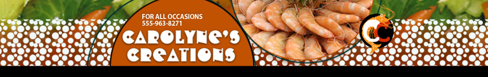

Let Carolyne's Creations be your personal chef, your one-stop shop for the latest in kitchen items and fresh ingredients, and your source for new and innovative recipes. We enjoy planning and presenting special events for all occasions — from children's birthday parties to corporate retreats. Pick-up and drop-off options are also available. We also offer beautiful baskets overflowing with delicious assortments of casseroles, salads, homemade breads, and desserts; trays of vegetables and cheeses or cookies; or coffee cakes and pastries with fresh ground coffee or specialty teas as perfect gifts for family and friends. We offer seasonal cooking classes in our newly redesigned kitchen for aspiring chefs of all ages.
We are located in the Plaza Shopping Center at 496 Maple Avenue in Seven Falls, Virginia. We are the second building on the left side of the complex when entering from the Main Street entrance. Give us a call at 555-963-8271 or stop by our shop to browse through our selections.
Copyright 2001 - 2013
Last updated on May 12, 2013